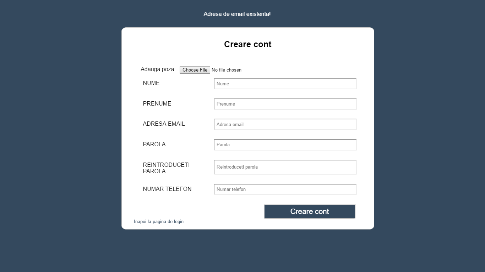

Ghid de utilizare a aplicaţiei Deton
Pagina de login
Pentru a accesa aplicatia este nevoie sa fie completat campul pentru email cu care toti utilizatorii se autentifica, emailul fiind unul unic si parola acestora.
Dupa ce campurile au fost completate utilizatorul apasa butonul de Login.Daca emailul nu exista in baza de date sau parola este gresita va aparea un mesaj pe ecran iar utilizatorul isi poate face cont apasand butonul Creare cont.
Creare cont
Cant se doreste crearea unui cont nou trebuie sa fie completate campurile NUME, PRENUME, ADRESA EMAIL, PAROLA, REINTRODUCERE PAROLA, NUMAR TELEFON cat si alegerea unei poze de profil.Dupa ce aceste campuri au fost completate se apasa butonul Creare Cont.
In cazul in care nu s-au completat campurile corespunzator vor fi afisare mesaje care sa fie intuitive pentru completarea corecta a forumarului.
Daca mai exista un email in baza de date cu acelasi completat utilizatorul va trebuii sa introduca alt email.

Cont utilizator
Pagina principala a unui utilizator este pagina in care poate sa faca o programare pentru a vizita un detinut.Utilziatorul trebuie sa completeze campurile formularului si sa apese la final butonul Adauga programare.In cazul in care detinutul nu exista sau alte cazuri particulare utilizatorului i se vor afisa mesaje de eroare.
In pagina Arhiva vizite utilizatorul poate vedea informatii despre vizitele pe care le-a facut.
In pagina Arhiva Programari utilizatorul aplicatiei poate vedea programarile de vizite care le-a efectuat.
Pagina Contact afiseza datele de contact ale institutiei.
Daca se doreste iesirea din aplicatie utilizatorul trebuie doar sa apese butonul de Logout.

Interfata pentru admin
Pagina principala a Adminului este pagina Programari vizite in care el vede programarile pe care trebuie sa le valideze.
Pentru a valida o programare Adminul trebuie sa apese pe o programare care o doreste si i se va deschide o alta pagina cu informatii detaliate despre programare.
Dupa ce completeaa campurile corespunzatoare acesta trebuie sa apese pe butonul Inregistrare vizita pentru a o valida.
In pagina de Utilizatori Adminul poate vizualiza toti utilizatorii, poate alege o litera cu care sa inceapa numele acestora sau sa cauta un utilizatori anume apasand pe butonul Cauta un utilizator.
Dupa ce apasa butonul Cauta un utilizator i se va deschide o noua pagina in care va completa campul cu numele si prenumele utlizatorului si i se vor afisa informarii despre acesta.In caz contrar,daca numele introdus nu exista in baza de date acestuia i se va afisa un mesaj.
In pagina detinuti Adminul poate sa vizualizeze toti detinutii sau poate cauta un detinut apasand butonul Cauta un detinut sau poate adauga un detinut apasand butonul Adauga un detinut.
Daca Adminul apasa pe un detinut acesta poate sa vada informatii despre vizitele detinului.
Apasarea pe butonul Cauta un detinut trimite catre o alta pagina in care se completeaza umele si prenumele detinului si este afisat informatii despre el, in caz contrar, daca acesta nu exista in baza de date va fi afisat un mesaj de eroare.
Apasand pe butonul Adauga un detinut Adminul este trimis pe o alta pagina unde trebuie sa completeze un formular iar la final trebuie sa apese butonul Inregistrare detinut.
In pagina de statistici Adminul poate vizualiza grafice pe anumite perioade de timp.
Pentru a iesi din aplicatie Adminul trebuie sa apese butonul de Logout.